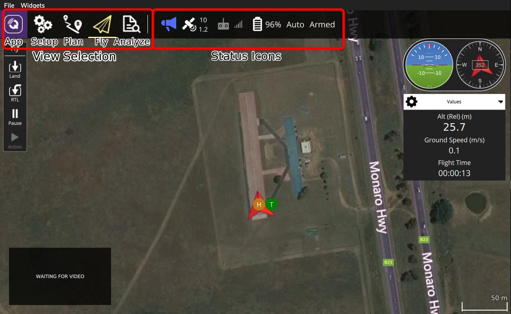

QGroundControl için Hızlı Başlangıç
QGroundControl'ü kurmak ve çalıştırmak, hızlı ve kolaydır:
- Uygulamayı indirin ve kurun.
- QGroundControl'ü başlatın.
- Aracınızı yer istasyonu cihazına USB, telemetri veya WIFI ile bağlayın. QGroundControl aracınızı otomatik olarak tespit edip bağlanacaktır.
İşte bu kadar! Eğer aracınız uçuşa hazırsa, aşağıda görebileceğiniz üzere QGroundControl Fly View 'i görüntüleyecektir (aksi halde Setup View'i açacaktır).

QGroundControl'e alışmanın iyi bir yolu denemeye başlamaktır:
- Ana ekranlar arasında geçiş yapmak için toolbar 'ı kullan:
- Bağlı aracın durumunu öğrenmek için araç çubuğundaki Status icons'a tıklayın.
Kullanıcı arayüzü gayet açık olsa da, daha fazlasını öğrenmek için bu dokümantasyona başvurulabilir.